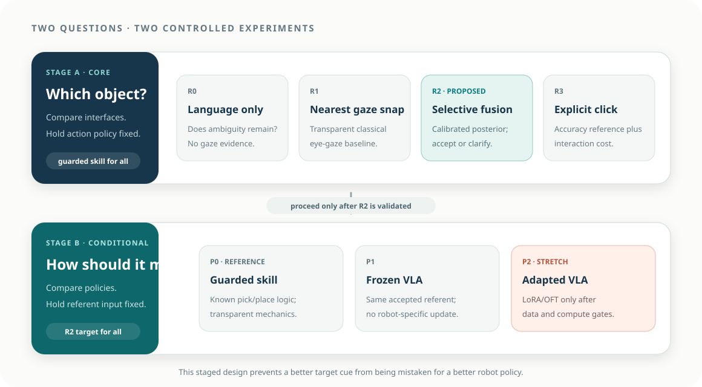

Selective reference
At matched decision coverage, does calibrated gaze–language fusion reduce wrong-referent activation relative to language only and nearest-gaze snapping?
Evaluation and claim logic
A demo answers “can it run once?” The study must answer two controlled questions without mixing them: first, whether selective gaze–language evidence improves target reference; second, whether a learned action policy improves robot execution when the target is already fixed.

01 · Research questions
Wrong-target activation and target-decision time are the primary outcomes. Robot mechanics, interface cost, and VLA adaptation explain separate questions without diluting the central claim.
At matched decision coverage, does calibrated gaze–language fusion reduce wrong-referent activation relative to language only and nearest-gaze snapping?
How does selective gaze compare with explicit clicking in decision time, error, clarification, confirmation, and workload?
How do appearance similarity, mask separation, language specificity, tracking quality, and held-out users change selective risk?
With the referent fixed, do frozen or adapted VLA policies improve held-out motion outcomes over a guarded deterministic skill?
Primary success requires lower wrong-referent risk at a prespecified useful coverage—not merely fewer errors caused by rejecting most trials.
02 · Controlled comparisons
Stage A holds robot mechanics fixed while the referent interface changes. Stage B holds the accepted referent fixed while the action policy changes. Camera, scene seeds, guard, outcome rules, and test split remain matched.
| Contrast | What remains fixed | Interpretation if positive | Interpretation if null/negative |
|---|---|---|---|
| R2 − R0 | guarded skill, scenes, confirmation | gaze–language evidence resolves ambiguity beyond words | gaze cue or temporal alignment adds no value |
| R2 − R1 | gaze window, masks, skill, scenes | uncertainty-aware fusion improves over a transparent gaze baseline | nearest-object snapping is sufficient |
| R2 − R3 | skill, scenes, outcome rules | gaze approaches click reliability with lower interaction cost | explicit clicking remains preferable |
| selective R2 vs forced R2 | posterior, episodes | abstention reduces risk at acceptable coverage | confidence is uninformative or thresholds reject too much |
| P1 − P0 | accepted target, scenes, guard | frozen VLA adds motion-level value | guarded skill is sufficient |
| P2 − P1 | accepted target, prompt, test groups | xArm adaptation adds transferable value | fine-tuning is unjustified or data are insufficient |
03 · Stress factors
A single uncluttered scene cannot support an industrial ambiguity claim. Manipulate a small number of theoretically meaningful factors and reserve combinations for held-out tests.
distinct objects → same family/different color → near-identical instances. Quantify feature similarity where practical.
well-separated → close → partially overlapping image masks. This directly interacts with gaze uncertainty.
explicit attributes → partial attributes → deictic “this.” This tests complementary information.
central/valid → edge-of-screen → moderate calibration noise → invalid. Poor quality should increase abstention.
3, 5, or more candidates, with irrelevant distractors controlled separately from target similarity.
fully visible versus partially occluded candidates; record visible mask fraction.
held-out layouts, source instances, destinations, lighting, utterances, and operators.
keep grasp difficulty matched in the referent study; vary it only in a separate robot-robustness block.
04 · Outcome hierarchy
Predeclare one primary intent outcome and one primary time outcome. Other metrics explain failure or practical cost.

If xArm picks the wrong part and places it perfectly, the mechanical pipeline succeeded while the intent pipeline failed. If the system refuses a truly ambiguous trial, the selective decision may be correct even though no object was moved. Reporting only “task success” would hide both facts.
| Layer | Metric | Definition | Why it matters |
|---|---|---|---|
| Intent | wrong-referent activation | \(\hat o\ne o^\star\) and the system authorizes or begins motion | connects a grounding error to physical consequence |
| Intent | pre-motion referent accuracy | top-1 selected object equals intended object before confirmation or motion | separates grounding from mechanics |
| Selectivity | coverage | fraction of episodes receiving an automatic accept decision | detects a trivial always-abstain policy |
| Selectivity | selective risk | error rate among accepted episodes at coverage \(c\) | evaluates the abstention trade-off |
| Timing | target-decision time | activation or utterance start to an accepted target | target-specification burden |
| Timing | end-to-end time | activation to verified placement, including repairs | practical system cost |
| Mechanics | pick/place/end-to-end success | separate phase labels plus their joint outcome | locates robot failure |
| Interaction | clarifications/confirmations/click fallback | count and duration per attempted and completed task | exposes human repair cost |
| Calibration | Brier/NLL/reliability | candidate probability quality against intended object | supports an uncertainty claim |
| Human factors | workload and preference | short validated scale plus forced comparison | secondary usability evidence |
05 · Evaluation sequence
Not every question requires a large participant study. Establish technical validity first, then spend human-study effort on interaction questions.
Replay matched images, language, and gaze windows for R0/R1/R2/R3. Evaluate top-1 reference, calibration, risk–coverage, similarity, separation, and held-out groups without robot variance.
Use explicit clicked targets with P0 to establish pick/place reliability. If the mechanical ceiling is low, repair the fixture and skill before interpreting any end-to-end result.
Run R0–R3 through the same guarded skill on physical xArm. Preserve both referent and mechanical labels; record every rejection, clarification, and intervention.
Use a within-subject design for R0–R3 if carryover is manageable. Counterbalance order, provide separate practice scenes, and keep the action policy fixed.
After R2 is locked, compare P0/P1/P2 with fixed target intents and repeated scene seeds. Evaluate policy success, latency, invalid output, intervention, and held-out transfer.
After the primary analysis is frozen, evaluate reserved object/layout/user/quality strata and publish boundary conditions.
tracking check → scene seed/load → ready/home → condition-specific instruction → target decision → confirm/clarify → guarded execute → verify/score → short rating → reset. The next trial cannot begin with a pending proposal from the previous episode.
06 · Statistical analysis
Trials from the same user, object family, and scene are correlated. Report effect sizes and uncertainty intervals, not only aggregate percentages.
\(C\) encodes condition, \(A\) ambiguity/similarity, \(S\) spatial separation, and \(L\) language specificity. Use a binomial mixed-effects model or a Bayesian hierarchical alternative. Predeclare the primary contrast and coding.
Decide how timeouts and abstentions enter the analysis. A completion-time-only analysis can reward a system that silently drops hard trials.
\(\Delta_{\mathrm{ref}}(c)\) is evaluated at one or more prespecified coverages \(c\). The adaptation estimand is secondary and is analyzed only after the policy-stage gate passes.
07 · Uncertainty evaluation
A high top-1 score is not calibrated simply because it is high. Evaluate whether 80% confidence corresponds to approximately 80% correctness and whether abstention captures difficult trials.
Proper scoring rule for multiclass candidate probabilities.
Strongly penalizes confident wrong candidates.
Sweep thresholds, plot error among accepted trials against accepted fraction, and compare area or prespecified operating points.
08 · Sample planning
No defensible sample size can be derived from the topic alone. Use engineering data to estimate failure rates and a small protocol pilot to estimate within-user variability and trial duration.
Simulate the planned mixed model using plausible baseline wrong-pick rates, meaningful improvement, random-effect variance, missingness, and trials per condition.
If formal power is unstable, set a desired confidence-interval width for the primary risk difference and justify the episode/user count.
For model development, use fixed validation checkpoints and learning curves; do not repeatedly inspect the final test set.
09 · Refutation and decision rules
These rules keep the final narrative honest and help the team decide where to spend effort.
| Observed result | Allowed conclusion | Engineering decision |
|---|---|---|
| R2 lowers risk versus R0/R1 at useful coverage | selective gaze–language fusion improves reference in the tested setting | retain R2 and characterize its boundary |
| R1 ≈ R2 | uncertainty-aware fusion has no demonstrated advantage over simple gaze snapping | ship R1 or improve calibration/fusion |
| R2 ≈ R3 but faster/less burdensome | gaze is a competitive low-friction reference input | strong interaction result |
| R2 worse than R3 with no cost benefit | click is preferable for this task/configuration | treat gaze as optional or future work |
| risk falls only because coverage collapses | selective policy is safer but operationally incomplete | improve calibration/repair; report the full curve |
| P0 ≈ P1/P2 | no demonstrated VLA advantage for the bounded motion task | ship the guarded skill; narrow the model claim |
| P2 > P1 on held-out trials | xArm adaptation adds value under the locked protocol | retain adapter and analyze data efficiency |
| P2 improves training only | adaptation overfits or the split/task lacks transfer | do not deploy the tuned model |